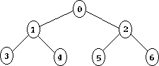

NOTE: This document is quite outdated. A new version will be integrated
into the next CK specs release (4.0)
The Alliance Thread Scheduler Internals: an Overview (draft)
1. The Alliance Scheduler to the programmer
The Alliance Scheduler uses two values to determine how a thread is to be
run:
Each time a thread gets a turn at the CPU it gets quantum "microticks". A
microtick is about 839 nanoseconds. In most systems you will want the
quantum for typical threads to be several thousand (one millisecond is
about 1192 microticks).
The higher defer is, the less often a thread gets a turn.
A thread's "share" of total execution is equal to quantum/defer.
A thread's fraction of total execution time is its share divided by the
total of the shares of all active threads.
Note that quantum and defer are integers, but share can be any value.
In fact share is never actually calculated by the scheduler. The
scheduler works strictly with quantum and defer. Share just happens as a
result.
2. Inside the scheduler
2.1. Policy: what gets run
The schduler uses a priority heap to sort its threads. The priority
heap is a binary tree and looks something like this:

... etc.
Each circle represents a pointer to a threadObject structure, which
contains the quantum, the defer and some scheduler scratch variables,
amongst others.
Every node (circle) has an index number N, with parent (N-1)/2 and
children (2N+1) and (2N+2). In the Alliance Scheduler, though, the
entries in the heap are accessed using pointers in stead of indices, which
changes the formulas a bit (see pri_heap.c for more info.) The nodes are
sorted in such a way that each node N has a next execution time which is
later or equal to the execution time of its parent. The event with the
earliest execution time is always on top (the root of the tree.) Every
time the scheduler is accessed the heap is adjusted so the earliest
thread to execute gets on top (siftdown(), see below.) This thread gets
run.
Two main operations exist for the heap: siftup() and siftdown();
siftup() is used to add a thread to the heap. siftdown() is used to
adjust the heap when the next execution time of the top thread has
changed.
siftup() works as follows: The thread to add to the heap is appended at
the end of the heap. The execution time of the new thread is then
compared with that of its parent. If it is less, then the positions of
the thread and its parent are exchanged in the heap. This is repeated
until the thread has got to the appropiate position in the heap.
siftdown() works as follows: when the top thread has finished its time
quantum, its next execution time variable is adjusted to its next
execution time. The position of the thread in the heap then needs to be
adjusted. siftdown() compares the next execution time of the top thread
with that of its child with the earliest execution time; if that child
has an earlier execution time than the thread, then their places in the
heap are exchanged; this is repeated until the thread has got to its
appropiate place in the heap.
2.2. Mechanism: Timesharing threads: Quantum/Defer
The defer is used to calculate the next execution time. Just after a
thread has finished its quantum, its defer is added to its previous
execution time. This way, the defer regulates how often a thread gets run
(see schedule() in sched.c).
The Quantum value is used to program the timer. Every time the scheduler
gets run, it picks the next thread off the top of the priority heap. It
then loads the 8254 timer register with the quantum value. The timer,
operating in mode 0, starts counting down to 0 from this value. The
scheduler context switches to the thread, which then continues to run
undisturbed until the counter has reached 0. The timer then causes a
hardware interrupt, which ends up in the scheduler routine being executed
again, advancing the thread's execution time, and picking a next thread to
run all over again.
2.3. Mechanism: Real-Time threads: Quantum/Deadline
The only difference between RT threads and normal threads is that RT
threads get to calculate their own quantum and next execution time
variables, whereas this is done by the scheduler for 'normal' timesharing
threads. Thus, implementing RT threads in this system is simple.
Either the RT thread itself (kernel threads) or its parent kernel (threads
on top of AKs) has access to the thread's object. The object contains
three (actually four, but the backpointer to the heap does not
influence the actual scheduling) scheduler variables: Quantum, Defer and
next execution Time. Every thread starts out with a quantum and defer
value, and is scheduled like a timesharing thread. When a thread wants to
load a deadline value into the scheduler, it simply adjusts its next
execution time in its object (or traps to its parent kernel and has it do
it) and its quantum value for the deadline. When the scheduler is invoked
it can check with a simple if() statement whether the time value has been
changed by the thread, and if so, it doesn't compute the next execution
time itself. That's all: no system calls are required, it all just
works (hopefully.) If an RT thread somehow 'forgets' to load its next
deadline, it automatically reverts to being a timesharing thread.
3. Bugs to solve / (near) Future Enhancments
In overload situations, deadlines can be missed. It would be nice to give
RT threads priority in this situation over normal timesharing threads. How
this is to be done is up for debate; a possible solution is to maintain a
separate heap for RT threads in addition to the main heap for all threads,
and then temporarily adjust the quantum time for a timesharing thread if an
RT thread's deadline is in the middle of its quantum.
Another problem to take care of is keeping track of 'real' time. This can
become a bit messy if the timer interrupt isn't fixed rate. John Fine
solves this by having channel 1 of the timer count down from 0xFFFFF, and
adjusting the 'real' time using channel 1 if it is running behind. Unless
somebody can think of a better scheme, I guess we should implement this,
too.
I haven't implemented an idle loop yet; This needs to be done.
Shouldn't be too hard, I just didn't get around to it yet.
4. History
Oct 11: Added RT tasks, more problems to take care of
First draft Oct 10, 1998 by Ramon van Handel (vhandel@chem.vu.nl)
Scheduler concept by John Fine (johnfine@erols.com)